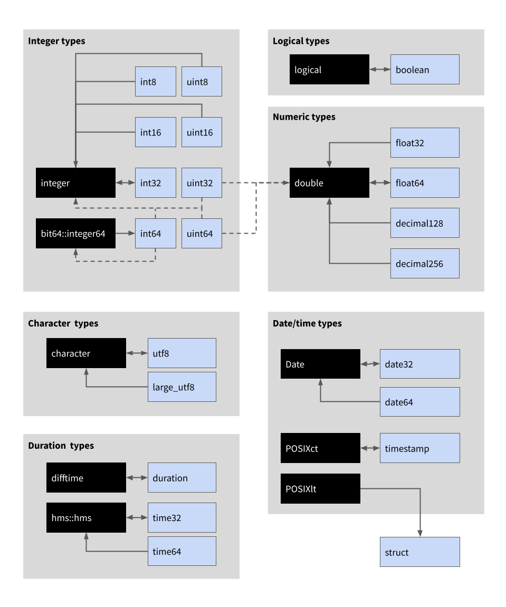

Arrow has a rich data type system that includes direct analogs of many R data types, and many data types that do not have a counterpart in R. This article describes the Arrow type system, compares it to R data types, and outlines the default mappings used when data are transferred from Arrow to R. At the end of the article there are two lookup tables: one describing the default “R to Arrow” type mappings and the other describing the “Arrow to R” mappings.
Motivating example
To illustrate the conversion that needs to take place, consider the
differences between the output when obtain we use
dplyr::glimpse() to inspect the starwars data
in its original format – as a data frame in R – and the output we obtain
when we convert it to an Arrow Table first by calling
arrow_table():
## Some features are not enabled in this build of Arrow. Run `arrow_info()` for more information.
glimpse(starwars)## Rows: 87
## Columns: 14
## $ name <chr> "Luke Skywalker", "C-3PO", "R2-D2", "Darth Vader", "Leia Or…
## $ height <int> 172, 167, 96, 202, 150, 178, 165, 97, 183, 182, 188, 180, 2…
## $ mass <dbl> 77.0, 75.0, 32.0, 136.0, 49.0, 120.0, 75.0, 32.0, 84.0, 77.…
## $ hair_color <chr> "blond", NA, NA, "none", "brown", "brown, grey", "brown", N…
## $ skin_color <chr> "fair", "gold", "white, blue", "white", "light", "light", "…
## $ eye_color <chr> "blue", "yellow", "red", "yellow", "brown", "blue", "blue",…
## $ birth_year <dbl> 19.0, 112.0, 33.0, 41.9, 19.0, 52.0, 47.0, NA, 24.0, 57.0, …
## $ sex <chr> "male", "none", "none", "male", "female", "male", "female",…
## $ gender <chr> "masculine", "masculine", "masculine", "masculine", "femini…
## $ homeworld <chr> "Tatooine", "Tatooine", "Naboo", "Tatooine", "Alderaan", "T…
## $ species <chr> "Human", "Droid", "Droid", "Human", "Human", "Human", "Huma…
## $ films <list> <"A New Hope", "The Empire Strikes Back", "Return of the J…
## $ vehicles <list> <"Snowspeeder", "Imperial Speeder Bike">, <>, <>, <>, "Imp…
## $ starships <list> <"X-wing", "Imperial shuttle">, <>, <>, "TIE Advanced x1",…
glimpse(arrow_table(starwars))## Table
## 87 rows x 14 columns
## $ name <string> "Luke Skywalker", "C-3PO", "R2-D2", "Darth Vader", "Leia…
## $ height <int32> 172, 167, 96, 202, 150, 178, 165, 97, 183, 182, 188, 180…
## $ mass <double> 77.0, 75.0, 32.0, 136.0, 49.0, 120.0, 75.0, 32.0, 84.0, …
## $ hair_color <string> "blond", NA, NA, "none", "brown", "brown, grey", "brown"…
## $ skin_color <string> "fair", "gold", "white, blue", "white", "light", "light"…
## $ eye_color <string> "blue", "yellow", "red", "yellow", "brown", "blue", "blu…
## $ birth_year <double> 19.0, 112.0, 33.0, 41.9, 19.0, 52.0, 47.0, NA, 24.0, 57.…
## $ sex <string> "male", "none", "none", "male", "female", "male", "femal…
## $ gender <string> "masculine", "masculine", "masculine", "masculine", "fem…
## $ homeworld <string> "Tatooine", "Tatooine", "Naboo", "Tatooine", "Alderaan",…
## $ species <string> "Human", "Droid", "Droid", "Human", "Human", "Human", "H…
## $ films <list<...>> <"A New Hope", "The Empire Strikes Back", "Return of the…
## $ vehicles <list<...>> <"Snowspeeder", "Imperial Speeder Bike">, <>, <>, <>, "I…
## $ starships <list<...>> <"X-wing", "Imperial shuttle">, <>, <>, "TIE Advanced x1…
## Call `print()` for full schema detailsThe data represented are essentially the same, but the descriptions of the data types for the columns have changed. For example:
-
nameis labelled<chr>(character vector) in the data frame; it is labelled<string>(a string type, also referred to as utf8 type) in the Arrow Table -
heightis labelled<int>(integer vector) in the data frame; it is labelled<int32>(32 bit signed integer) in the Arrow Table -
massis labelled<dbl>(numeric vector) in the data frame; it is labelled<double>(64 bit floating point number) in the Arrow Table
Some of these differences are purely cosmetic: integers in R are in fact 32 bit signed integers, so the underlying data types in Arrow and R are direct analogs of one another. In other cases the differences are purely about the implementation: Arrow and R have different ways to store a vector of strings, but at a high level of abstraction the R character type and the Arrow string type can be viewed as direct analogs. In some cases, however, there are no clear analogs: while Arrow has an analog of POSIXct (the timestamp type) it does not have an analog of POSIXlt; conversely, while R can represent 32 bit signed integers, it does not have an equivalent of a 64 bit unsigned integer.
When the arrow package converts between R data and Arrow data, it
will first check to see if a Schema has been provided – see
schema() for more information – and if none is available it
will attempt to guess the appropriate type by following the default
mappings. A complete listing of these mappings is provided at the end of
the article, but the most common cases are depicted in the illustration
below:

In this image, black boxes refer to R data types and light blue boxes refer to Arrow data types. Directional arrows specify conversions (e.g., the bidirectional arrow between the logical R type and the boolean Arrow type means that the logical R converts to an Arrow boolean and vice versa). Solid lines indicate that this conversion rule is always the default; dashed lines mean that it only sometimes applies (the rules and special cases are described below).
Logical/boolean types
Arrow and R both use three-valued logic. In R, logical values can be
TRUE or FALSE, with NA used to
represent missing data. In Arrow, the corresponding boolean type can
take values true, false, or null,
as shown below:
chunked_array(c(TRUE, FALSE, NA), type = boolean()) # default## ChunkedArray
## <bool>
## [
## [
## true,
## false,
## null
## ]
## ]It is not strictly necessary to set type = boolean() in
this example because the default behavior in arrow is to translate R
logical vectors to Arrow booleans and vice versa. However, for the sake
of clarity we will specify the data types explicitly throughout this
article. We will likewise use chunked_array() to create
Arrow data from R objects and as.vector() to create R data
from Arrow objects, but similar results are obtained if we use other
methods.
Integer types
Base R natively supports only one type of integer, using 32 bits to
represent signed numbers between -2147483648 and 2147483647, though R
can also support 64 bit integers via the bit64
package. Arrow inherits signed and unsigned integer types from C++ in 8
bit, 16 bit, 32 bit, and 64 bit versions:
| Description | Data Type Function | Smallest Value | Largest Value |
|---|---|---|---|
| 8 bit unsigned | uint8() |
0 | 255 |
| 16 bit unsigned | uint16() |
0 | 65535 |
| 32 bit unsigned | uint32() |
0 | 4294967295 |
| 64 bit unsigned | uint64() |
0 | 18446744073709551615 |
| 8 bit signed | int8() |
-128 | 127 |
| 16 bit signed | int16() |
-32768 | 32767 |
| 32 bit signed | int32() |
-2147483648 | 2147483647 |
| 64 bit signed | int64() |
-9223372036854775808 | 9223372036854775807 |
By default, arrow translates R integers to the int32 type in Arrow, but you can override this by explicitly specifying another integer type:
chunked_array(c(10L, 3L, 200L), type = int32()) # default## ChunkedArray
## <int32>
## [
## [
## 10,
## 3,
## 200
## ]
## ]
chunked_array(c(10L, 3L, 200L), type = int64())## ChunkedArray
## <int64>
## [
## [
## 10,
## 3,
## 200
## ]
## ]If the value in R does not fall within the permissible range for the corresponding Arrow type, arrow throws an error:
chunked_array(c(10L, 3L, 200L), type = int8())## Error: Invalid: value outside of rangeWhen translating from Arrow to R, integer types alway translate to R integers unless one of the following exceptions applies:
- If the value of an Arrow uint32 or uint64 falls outside the range allowed for R integers, the result will be a numeric vector in R
- If the value of an Arrow int64 variable falls outside the range
allowed for R integers, the result will be a
bit64::integer64vector in R - If the user sets
options(arrow.int64_downcast = FALSE), the Arrow int64 type always yields abit64::integer64vector in R regardless of the value
Floating point numeric types
R has one double-precision (64 bit) numeric type, which translates to
the Arrow 64 bit floating point type by default. Arrow supports both
single-precision (32 bit) and double-precision (64 bit) floating point
numbers, specified using the float32() and
float64() data type functions. Both of these are translated
to doubles in R. Examples are shown below:
chunked_array(c(0.1, 0.2, 0.3), type = float64()) # default## ChunkedArray
## <double>
## [
## [
## 0.1,
## 0.2,
## 0.3
## ]
## ]
chunked_array(c(0.1, 0.2, 0.3), type = float32())## ChunkedArray
## <float>
## [
## [
## 0.1,
## 0.2,
## 0.3
## ]
## ]
arrow_double <- chunked_array(c(0.1, 0.2, 0.3), type = float64())
as.vector(arrow_double)## [1] 0.1 0.2 0.3Note that the Arrow specification also permits half-precision (16 bit) floating point numbers, but these have not yet been implemented.
Fixed point decimal types
Arrow also contains decimal() data types, in which
numeric values are specified in decimal format rather than binary.
Decimals in Arrow come in two varieties, a 128 bit version and a 256 bit
version, but in most cases users should be able to use the more general
decimal() data type function rather than the specific
decimal128() and decimal256() functions.
The decimal types in Arrow are fixed-precision numbers (rather than
floating-point), which means it is necessary to explicitly specify the
precision and scale arguments:
-
precisionspecifies the number of significant digits to store. -
scalespecifies the number of digits that should be stored after the decimal point. If you setscale = 2, exactly two digits will be stored after the decimal point. If you setscale = 0, values will be rounded to the nearest whole number. Negative scales are also permitted (handy when dealing with extremely large numbers), soscale = -2stores the value to the nearest 100.
Because R does not have any way to create decimal types natively, the
example below is a little circuitous. First we create some floating
point numbers as Chunked Arrays, and then explicitly cast these to
decimal types within Arrow. This is possible because Chunked Array
objects possess a cast() method:
arrow_floating <- chunked_array(c(.01, .1, 1, 10, 100))
arrow_decimals <- arrow_floating$cast(decimal(precision = 5, scale = 2))
arrow_decimals## ChunkedArray
## <decimal128(5, 2)>
## [
## [
## 0.01,
## 0.10,
## 1.00,
## 10.00,
## 100.00
## ]
## ]Though not natively used in R, decimal types can be useful in situations where it is especially important to avoid problems that arise in floating point arithmetic.
String/character types
R uses a single character type to represent strings whereas Arrow has
two types. In the Arrow C++ library these types are referred to as
strings and large_strings, but to avoid ambiguity in the arrow R package
they are defined using the utf8() and
large_utf8() data type functions. The distinction between
these two Arrow types is unlikely to be important for R users, though
the difference is discussed in the article on data object layout.
The default behavior is to translate R character vectors to the utf8/string type, and to translate both Arrow types to R character vectors:
strings <- chunked_array(c("oh", "well", "whatever"))
strings## ChunkedArray
## <string>
## [
## [
## "oh",
## "well",
## "whatever"
## ]
## ]
as.vector(strings)## [1] "oh" "well" "whatever"Factor/dictionary types
The analog of R factors in Arrow is the dictionary type. Factors translate to dictionaries and vice versa. To illustrate this, let’s create a small factor object in R:
## [1] cat dog pig dog
## Levels: cat dog pigWhen translated to Arrow, this is the dictionary that results:
dict <- chunked_array(fct, type = dictionary())
dict## ChunkedArray
## <dictionary<values=string, indices=int32>>
## [
##
## -- dictionary:
## [
## "cat",
## "dog",
## "pig"
## ]
## -- indices:
## [
## 0,
## 1,
## 2,
## 1
## ]
## ]When translated back to R, we recover the original factor:
as.vector(dict)## [1] cat dog pig dog
## Levels: cat dog pigArrow dictionaries are slightly more flexible than R factors: values in a dictionary do not necessarily have to be strings, but labels in a factor do. As a consequence, non-string values in an Arrow dictionary are coerced to strings when translated to R.
Date types
In R, dates are typically represented using the Date class. Internally a Date object is a numeric type whose value counts the number of days since the beginning of the Unix epoch (1 January 1970). Arrow supplies two data types that can be used to represent dates: the date32 type and the date64 type. The date32 type is similar to the Date class in R: internally it stores a 32 bit integer that counts the number of days since 1 January 1970. The default in arrow is to translate R Date objects to Arrow date32 types:
## [1] "1989-06-15" "1991-09-24" "1993-09-13"
nirvana_32 <- chunked_array(nirvana_album_dates, type = date32()) # default
nirvana_32## ChunkedArray
## <date32[day]>
## [
## [
## 1989-06-15,
## 1991-09-24,
## 1993-09-13
## ]
## ]Arrow also supplies a higher-precision date64 type, in which the date is represented as a 64 bit integer that encodes the number of milliseconds since 1970-01-01 00:00 UTC:
nirvana_64 <- chunked_array(nirvana_album_dates, type = date64())
nirvana_64## ChunkedArray
## <date64[ms]>
## [
## [
## 1989-06-15,
## 1991-09-24,
## 1993-09-13
## ]
## ]The translation from Arrow to R differs. Internally the date32 type is very similar to an R Date, so these objects are translated to R as Dates:
## [1] "Date"However, because date64 types are specified to millisecond-level precision, they are translated to R as POSIXct times to avoid the possibility of losing relevant information:
## [1] "POSIXct" "POSIXt"Temporal/timestamp types
In R there are two classes used to represent date and time information, POSIXct and POSIXlt. Arrow only has one: the timestamp type. Arrow timestamps are loosely analogous to the POSIXct class. Internally, a POSIXct object represents the date with as a numeric variable that stores the number of seconds since 1970-01-01 00:00 UTC. Internally, an Arrow timestamp is a 64 bit integer counting the number of milliseconds since 1970-01-01 00:00 UTC.
Arrow and R both support timezone information, but display it differently in the printed object. In R, local time is printed with the timezone name adjacent to it:
sydney_newyear <- as.POSIXct("2000-01-01 00:01", tz = "Australia/Sydney")
sydney_newyear## [1] "2000-01-01 00:01:00 AEDT"When translated to Arrow, this POSIXct object becomes an Arrow timestamp object. When printed, however, the temporal instant is always displayed in UTC rather than local time:
sydney_newyear_arrow <- chunked_array(sydney_newyear, type = timestamp())
sydney_newyear_arrow## ChunkedArray
## <timestamp[s]>
## [
## [
## 1999-12-31 13:01:00
## ]
## ]The timezone information is not lost, however, which we can easily
see by translating the sydney_newyear_arrow object back to
an R POSIXct object:
as.vector(sydney_newyear_arrow)## [1] "1999-12-31 05:01:00 PST"For POSIXlt objects the behaviour is different. Internally a POSIXlt object is a list specifying the “local time” in terms of a variety of human-relevant fields. There is no analogous class to this in Arrow, so the default behaviour is to translate it to an Arrow list.
Time of day types
Base R does not have a class to represent the time of day independent
of the date (i.e., it is not possible to specify “3pm” without referring
to a specific day), but it can be done with the help of the hms package.
Internally, hms objects are always stored as the number of seconds since
00:00:00.
Arrow has two data types for this purposes. For time32 types, data are stored as a 32 bit integer that is interpreted either as the number of seconds or the number of milliseconds since 00:00:00. Note the difference between the following:
time_of_day <- hms::hms(56, 34, 12)
chunked_array(time_of_day, type = time32(unit = "s"))## ChunkedArray
## <time32[s]>
## [
## [
## 12:34:56
## ]
## ]
chunked_array(time_of_day, type = time32(unit = "ms"))## ChunkedArray
## <time32[ms]>
## [
## [
## 12:34:56.000
## ]
## ]A time64 object is similar, but stores the time of day using a 64 bit
integer and can represent the time at higher precision. It is possible
to choose microseconds (unit = "us") or nanoseconds
(unit = "ns"), as shown below:
chunked_array(time_of_day, type = time64(unit = "us"))## ChunkedArray
## <time64[us]>
## [
## [
## 12:34:56.000000
## ]
## ]
chunked_array(time_of_day, type = time64(unit = "ns"))## ChunkedArray
## <time64[ns]>
## [
## [
## 12:34:56.000000000
## ]
## ]All versions of time32 and time64 objects in Arrow translate to hms times in R.
Duration types
Lengths of time are represented as difftime objects in R. The
analogous data type in Arrow is the duration type. A duration type is
stored as a 64 bit integer, which can represent the number of seconds
(the default, unit = "s"), milliseconds
(unit = "ms"), microseconds (unit = "us"), or
nanoseconds (unit = "ns"). To illustrate this we’ll create
a difftime in R corresponding to 278 seconds:
len <- as.difftime(278, unit = "secs")
len## Time difference of 278 secsThe translation to Arrow looks like this:
chunked_array(len, type = duration(unit = "s")) # default## ChunkedArray
## <duration[s]>
## [
## [
## 278
## ]
## ]
chunked_array(len, type = duration(unit = "ns"))## ChunkedArray
## <duration[ns]>
## [
## [
## 278000000000
## ]
## ]Regardless of the underlying unit, duration objects in Arrow translate to difftime objects in R.
List of default translations
The discussion above covers the most common cases. The two tables in
this section provide a more complete list of how arrow translates
between R data types and Arrow data types. In these table, entries with
a - are not currently implemented.
Translations from R to Arrow
| Original R type | Arrow type after translation |
|---|---|
| logical | boolean |
| integer | int32 |
| double (“numeric”) | float64 1 |
| character | utf8 2 |
| factor | dictionary |
| raw | uint8 |
| Date | date32 |
| POSIXct | timestamp |
| POSIXlt | struct |
| data.frame | struct |
| list 3 | list |
| bit64::integer64 | int64 |
| hms::hms | time32 |
| difftime | duration |
| vctrs::vctrs_unspecified | null |
1: float64 and double are the
same concept and data type in Arrow C++; however, only
float64() is used in arrow as the function
double() already exists in base R
2: If the character vector exceeds 2GB of strings, it will
be converted to a large_utf8 Arrow type
3: Only lists where all elements are the same type are able to be translated to Arrow list type (which is a “list of” some type).
Translations from Arrow to R
| Original Arrow type | R type after translation |
|---|---|
| boolean | logical |
| int8 | integer |
| int16 | integer |
| int32 | integer |
| int64 | integer 1 |
| uint8 | integer |
| uint16 | integer |
| uint32 | integer 1 |
| uint64 | integer 1 |
| float16 | - 2 |
| float32 | double |
| float64 | double |
| utf8 | character |
| large_utf8 | character |
| binary | arrow_binary 3 |
| large_binary | arrow_large_binary 3 |
| fixed_size_binary | arrow_fixed_size_binary 3 |
| date32 | Date |
| date64 | POSIXct |
| time32 | hms::hms |
| time64 | hms::hms |
| timestamp | POSIXct |
| duration | difftime |
| decimal | double |
| dictionary | factor 4 |
| list | arrow_list 5 |
| large_list | arrow_large_list 5 |
| fixed_size_list | arrow_fixed_size_list 5 |
| struct | data.frame |
| null | vctrs::vctrs_unspecified |
| map | arrow_list 5 |
| union | - 2 |
1: These integer types may contain values that exceed the
range of R’s integer type (32 bit signed integer). When
they do, uint32 and uint64 are converted to
double (“numeric”) and int64 is converted to
bit64::integer64. This conversion can be disabled (so that
int64 always yields a bit64::integer64 vector)
by setting options(arrow.int64_downcast = FALSE).
2: Some Arrow data types do not currently have an R equivalent and will raise an error if cast to or mapped to via a schema.
3: arrow*_binary classes are implemented as
lists of raw vectors.
4: Due to the limitation of R factors, Arrow
dictionary values are coerced to string when translated to
R if they are not already strings.
5: arrow*_list classes are implemented as
subclasses of vctrs_list_of with a ptype
attribute set to what an empty Array of the value type converts to.
Further reading
- To learn more how data types are specified through
schema()metadata, see the metadata article. - For additional details on data types, see the data types article.